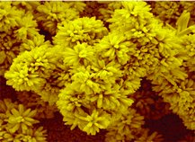
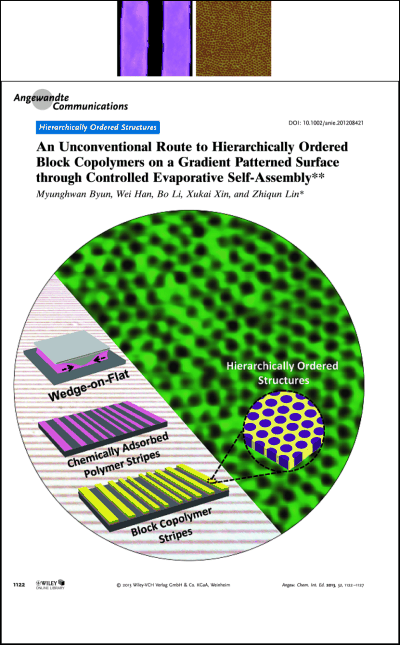

*= Corresponding Author
Book and Book Chapters
Book
120. Z. Lin*, "Evaporative self-assembly of ordered complex structures", World Scientific Publishing Company (Singapore) (2012)
Book Chapters
119. J. Wang, X. Xin, D. Vennerbergl and Z. Lin*, "Quantum-dot sensitized three dimensional nanostructures for photovoltaics applications" in the book entitled "Three-dimensional nanostructures", Springer (2011)
118. M. Byun and Z. Lin*, "Robust self-assembly of highly ordered complex structures by controlled evaporation of confined microfluids" in the book entitled "Evaporative self-assembly of ordered complex structures", World Scientific Publishing Company (Singapore) (2012)
117. J. Wang, L. Zhao, and M. Goodman, and Z. Lin*, "Semiconducting nanostructures for new energy generating and novel bio-detecting" in the book entitled, "Encyclopedia of semiconductor nanotechnology", American Scientific Publishers (2011)
116. J. Wang and Z. Lin*, "Nanostructured Semiconducting, Magnetic and Ferroelectric Crystals: Synthesis and Applications" in "Metal Oxide Nanostructures and Their Applications", Volume 2, edited by A. Umar and Y. B. Hahn, American Scientific Publisher (ASP), USA. (2009)
Peer Reviewed Journal Papers (2005-2013)
Web of Knowledge ResearcherID: G-6136-2011, http://www.researcherid.com/rid/G-6136-2011
2013
115. M. Ye, D. Zheng, M. Lv, C. Chen, C. Lin, and Z. Lin*, "Hierarchically structured nanotubes for highly efficient dye-sensitized solar cells”, Advanced Materials (in press).
114. M. Wang, L. Sun, Z. Lin*, J. Cai, K. Xie, and C. Lin, "p-n heterojunction photoelectrodes composed of Cu2O-loaded TiO2 nanotube arrays with enhanced photoelectrochemical and photoelectrocatalytic activities”, Energy & Environmental Science (in press).
113. M. He, F. Qiu, and Z. Lin*, "Towards high-performance polymer-based thermoelectric materials”, Energy & Environmental Science (in press).
112. W. Han, M. He, M. Byun, B. Li, and Z. Lin*, “Large-scale hierarchically structured conjugated polymer assemblies with enhanced electrical conductivity”, Angewandte Chemie International Edition (in press).
111. X. Pang, L. Zhao, C. Feng, R. Wu, and Z. Lin*, “Functional copolymer brushes composed of hydrophobic backbone and densely grafted conjugated side chains via a combination of click chemistry with living polymerization”, Polymer Chemistry (in press).
110. J. Liu, H. Guo, X. Pang, X. Tan, M. Akinc, Z. Lin, N. Bowler,"Dynamics of polystyrene-b-poly(methylmethacrylate) (PS-b-PMMA) diblock copolymers and PS/PMMA blends: a dielectric study”, Journal of Non-Crystalline Solids, 359, 27 (2013). [PDF]
109. H. Ma, X. Pang, J. Jung, L. Zhao, C. Feng, W. Han, X. Xin, and Z. Lin*, "Synthesis and characterization of semiconducting conjugated polymer-nanowire nanocomposites”, Science of Advanced Materials (in press).
108. M. Ye, H. Liu, C. Lin, and Z. Lin*, “Hierarchical rutile TiO2 flower clusters based high efficiency dye-sensitized solar cells via direct hydrothermal growth on conducting substrates”, Small, 9, 312( (2013). [PDF]

107. M. Byun, W. Han, B. Li, X. Xin, and Z. Lin*, "An unconventional route to hierarchically ordered block copolymer on gradient patterned surface enabled by controlled evaporative self-assembly”,Angewandte Chemie International Edition, 52, 1122(2013). [PDF] (Featured on the Frontispiece of Angewandte Chemie International Edition).

2012
106. W. Han, M. Byun, B. Li, X. Pang, and Z. Lin*, “A simple route to hierarchically assembled micelles and inorganic nanoparticles”, Angewandte Chemie International Edition, 51, 12588 (2012). [PDF] (Selected as Hot Paper by the Editors).
105. M. Ye, J. Gong, Y. Lai, C. Lin, and Z. Lin*, “High efficiency photoelectrocatalytic hydrogen generation enabled by palladium quantum dots sensitized TiO2 nanotube arrays”, Journal of the American Chemical Society, 134, 15720 (2012). [PDF]
104. M. He, J. Jung, F. Qiu, Z. Lin*, "Graphene-based transpant flexible electrodes for polymer solar cells", Journal of Materials Chemistry, 22, 24254 (2012). [PDF] (Invited Feature Article).
103. Y. Jang, X. Xin, M. Byun, Y. Jiang, Z. Lin* and D. Kim, "An unconventional route to high-efficiency dye-sensitized solar cells via embedding graphitic thin films into TiO2 nanoparticle photoanode", Nano Letters, 12, 479 (2012).[PDF]
102. L. Zhao and Z. Lin*, “Crafting semiconductor organic-inorganic nanocomposites via placing conjugated polymers in intimate contact with nanocrystals for hybrid solar cells”, Advanced Materials, 24, 4353 (2012) [PDF] (Invited Review) (featured on Inside Front Cover of Advanced Materials).

101. M. He, J. Ge, Z. Lin, X. Wang, H. Lu, Y. Yang, and F. Qiu, “Thermopower enhancement in conducting polymer nanocomposites via carrier energy scattering at organic/inorganic semiconductor interface”, Energy & Environmental Science, 5, 8351 (2012) [PDF].
100. S. W. Kwon, T. Y. Kim, W. K. Park, H. Kim, Y. Kim, Z. Lin, K. S. Suh, D. H. Yoon, and W. S. Yang, “Large-scale patterning by the roll-based evaporation-induced self-assembly“, Journal of Materials Chemistry, 22, 22844 (2012) [PDF].
99. H. Z. Guo, Y. Mudryk, M. I. Ahmad, X. C. Pang, L. Zhao, M. Akinc, V. K. Pecharsky, N. Bowler, Z. Lin, and X. Tan, “Structure evolution and dielectric behavior of polystyrene-capped barium titanate nanoparticles”, Journal of Materials Chemistry, 22, 23944 (2012).[PDF]
98. J. Wang and Z. Lin*, “Dye-sensitized TiO2 nanotube solar cells: rational structural and surface engineering on TiO2 nanotubes”, Chemistry - An Asian Journal , 7, 2754 (2012). [PDF] (Invited Review) (featured on the Frontispiece of Chemistry - An Asian Journal.).

97. X. Xin, J. Wang, W. Han, M. Ye and Z. Lin*, "Dye-sensitized solar cells based on a nanoparticle/nanotube bilayer structure and their equivalent circuit analysis", Nanoscale, 4, 964 (2012). [PDF]
96. M. Ye, D. Vennerberg, C. Lin, and Z. Lin*, "Nanostructured TiO2 architectures for environmental and energy applications", Journal of Nanoscience Letters, 2, 1 (2012). [PDF] (Invited Review) (featured on Cover of Journal of Nanoscience Letters).
95. W. Han and Z. Lin*, "Learning from "coffee rings": ordered structures enabled by controlled evaporative self-assembly", Angewandte Chemie International Edition, 51, 1534 (2012). [PDF] (Invited Review) (featured on the Frontispiece of Angewandte Chemie International Edition.)

2011
94. X. Xin, M. He, W. Han, and Z. Lin*, "Low-cost CZTS counter electrodes for high-efficiency dye sensitized solar cells”, Angewandte Chemie International Edition, 50, 11739 (2011). [PDF] (Selected as Very Important Paper (VIP); featured by Nanowerk; featured on the Front Cover of Angewandte Chemie International Edition).
93. M. Ye, X. Xin, C. Lin, and Z. Lin*, "High efficiency dye-sensitized solar cells based on hierarchically structured nanotubes”, Nano Letters, 11, 3214 (2011). [PDF]
92. A.Bhuwalka, F. Mike, M. He, J. Intemann, T. Nelson, D. Ewan, A. Roggers, Z. Lin, M. Jeffries-EL, "Quaterthiophene-benzobisazole copolymers for photovoltaic cells: effect of heteroatom placement and substitution on the optical and electronic properties", Macromolecules, 44, 9611 (2011). [PDF]
91. J. Wang, D. Vennerberg and Z. Lin*, "Quantum dots sensitized solar cells", Journal of Nanoengineering and Nanomanufacturing, 1, 155 (2011). [PDF] (Invited Review).
90. X. Xin, M. Scheiner, M. Ye and Z. Lin*, "Surface-treated TiO2 nanoparticles for dye-sensitized solar cells with remarkably enhanced performance", Langmiur, 27, 14594 (2011). [PDF]
89. X. Pang, L. Zhao, C. Feng, and Z. Lin*, "Novel amphiphilic multi-arm, star-kike coil-rod diblock copolymers via a combination of click chemistry with living polymerization", Macromolecules, 44, 7176 (2011). [PDF]
88. L. Zhao, X. Pang, R. Adhikary, J. Petrich, M. Jeffries-EL, and Z. Lin*, "Organic-inorganic nanocomposites by placing conjugated polymers in intimate contact with quantum rods”, Advanced Materials, 23, 2844 (2011). [PDF] (featured on Frontispiece of Advanced Materials (July 5 issue)).
87. S. Kwon, T. Kim, Y. Kim, K. Suh, Z. Lin, D. Yoon, and W. Yang, "Micropatterns of reduced graphene oxide (RG-O) platelets crafted by self-assembled template", Soft Matter, 7, 6811 (2011). [PDF]
86. W. Han, M. Byun and Z. Lin*, "Assembling and positioning latex nanoparticles via controlled evaporative self-assembly”, Journal of Materials Chemistry, 21, 16968 (2011). [PDF]
85. M. He, F. Qiu, and Z. Lin*, "Conjugated rod-coil and rod-rod block copolymers for photovoltaic applications”, Journal of Materials Chemistry, 21, 17039 (2011). [PDF] (Invited Feature Article) (featured on the Front Cover of Journal of Materials Chemistry).
84. M. He, W. Han, J. Ge,Y. L. Yang, F. Qiu, and Z. Lin*, "High efficiency all-conjugated poly(3-alkylthiophene) diblock copolymer-based bulk heterojunction solar cells with controlled molecular organization and nanoscale morphology", Energy & Environmental Science, 4, 2894 (2011). [PDF]

83. L. Zhao and Z. Lin*, "Self-assembly of non-linear polymers at the air/water interface: effect of molecular architecture”, Soft Matter, 7, 10520 (2011). [PDF] (Invited Review) (identified as a ‘Hot Article’ for Soft Matter; featured on the Front Cover of Soft Matter).
82. J. Wang, X. Xin, and Z. Lin*, "Cu2ZnSnS4 nanocrystals and graphene quantum dots for photovoltaics”, Nanoscale, 3, 3040 (2011). [PDF] (Invited Feature Article; amongst the top ten accessed articles from the online version of Nanoscale (both in July and August)).
81. C. Wang, K. Xie, L. Sun, M. Wang, Z. Lin, and C. Lin, "Room temperature one-step synthesis of the microarrays of N-doped flower-like anatase TiO2 composed of well-defined multilayer nanoflakes by Ti anodization”, Nanotechnology, 22, 305607 (2011). [PDF]
80. M. He, W. Han, J. Ge, W. Yu, Y. L. Yang, F. Qiu, and Z. Lin*, "Annealing effects on the photovoltaic performance of all-conjugated poly(3-alkylthiophene) diblock copolymer-based bulk heterojunction solar cells”, Nanoscale, 3, 3159 (2011). [PDF]
79. X. Pang, L. Zhao, M. Akinc, J. K. Kim, and Z. Lin*, "Novel amphiphilic multi-arm, star-like block copolymers as unimolecular micelles”, Macromolecules, 44, 3746 (2011). [PDF]
78. K. Schlichting, T. M. Copeland-Johnson, M. Goodman, R. J. Lipert, T. O. McKinley, Z. Lin, J. A. Martin, T. Prozorov, X. Liu, and S. Mallapragada, "Synthesis of a novel photopolymerized nanocomposite hydrogel for treatment of acute mechanical damage to cartilage”, Acta Biomaterialia, 7, 3094 (2011). [PDF]
77. W.Han, M. Byun, L. Zhao, J. Rzayev, and Z. Lin*, "Controlled evaporative self-assembly of hierarchically structured bottlebrush block copolymer with nanochannels”, Journal of Materials Chemistry, 21, 14248 (2011). [PDF]
76. M. Byun, W. Han, B. Li, S. Hong, J. Cho, Q. Zou, and Z. Lin*, "Guided organization of λ-DNA into microring arrays from liquid capillary bridge”, Small, 12, 1641 (2011). [PDF] (Featured by Materials Views).
75. E. A. Stefanescu, X. Tan, Z. Lin, N. Bowler and M. R. Kessler, "Fiberglass reinforced PMMA-ceramic structural composites for multifunctional capacitor applications”, Polymer, 52, 2016 (2011). [PDF]
74. S. W. Kwon, M. Byun, Z. Lin*, and W. S. Yang, "Simple route to ridge optical waveguide fabricated via controlled evaporative assembly”, Journal of Materials Chemistry, 21, 5230 (2011). [PDF]
73. S. Pattnaik, K. Swain, S. Mallick, and Z. Lin, "Effect of casting solvent on crystallinity of ondansetron in transdermal films”, International Journal of Pharmaceutics, 406, 106 (2011). [PDF]
72. D. Vennerberg and Z. Lin*, "Upconversion nanocrystals: synthesis, properties, assembly and applications”, Science of Advanced Materials, 3,26 (2011). [PDF] (Invited Review; Publisher: American Scientific Publisher; featured on Cover).
71. L. Zhao, X. Pang, R. Adhikary, J. Petrich, and Z. Lin*, "Semiconductor anisotropic nanocomposites via directly coupling conjugated polymers with quantum rods”, Angewandte Chemie International Edition, 50, 3958 (2011). [PDF] (Featured on Inside Front Cover of Angewandte Chemie International Edition; Featured on Nanowerk; highlighted by MRS Bulletin (the June 2011 issue (Vol 36, PP 405)) [Link].)
2010
70. M. Byun, N. B. Bowden, and Z. Lin*, "Hierarchically organized structures engineered from controlled evaporative self-assembly", Nano Letters, 10, 3111 (2010). [PDF]
69. E. A. Stefanescu, X. Tan, Z. Lin, N. Bowler and M. R. Kessler, "PMMA-cermanic structural composites for multifunctional capacitors", Polymer, 51, 5823 (2010). [PDF].
68. Z. Lin*, "Controlled evaporative assembly of polymers from confined solutions", Journal of Polymer Science Part B: Polymer Physics, 8, 24, 2552 (2010). [PDF] (Invited Perspective; Featured on Cover of Journal of Polymer Science Part B: Polymer Physics)
67. J. Wang, X. Pang, M. Aknic, and Z. Lin*, "Synthesis and characterization of perovskite PbTiO3 nanoparticles with solution processibility", Journal of Materials Chemistry, 20, 5945 (2010). [PDF]
66. M. Byun, W. Han, F. Qiu, Ned B. Bowden, and Z. Lin*, "Self-assembly: hierarchically ordered structures enabled by controlled evaporative self-assembly", Small, 20, 2250 (2010). [PDF] (Featured as featured on the Inside Front Cover of Small; featured on materials science news site MaterialsViews.com).
65. M. He, L. Zhao, J. Wang, W. Han, Y. L. Yang, F. Qiu, and Z. Lin*, "Self-assembly of all-conjugated poly(3-alkylthiophene) diblock copolymer nanostructures from mixed selective solvents", ACS Nano, 4, 3241, (2010). [PDF] (Featured as an In Nano selection).
64. V. Kozlovskaya, E. Kharlampieva, K. Jones, Z. Lin, and V. V. Tsukruk, "PH-controlled assembly and properties of LbL membranes from branched poly(alkoxythiophene sulfonate) and various polycations", Langmuir, 26, 7138 (2010). [PDF]
63. L Zhao, J. Wang and Z. Lin*, "Semiconducting nanocrystals, conjugated Polymers, and conjugated polymer/nanocrystal nanohybrids and their use in solar cells", Frontiers of Chemistry in China (Invited Review; Publisher: Springer) 5, 33 (2010). [PDF]
62. M. Goodman, L. Zhao, and Z. Lin*, "Self-assembly of CdTe tetrapods into network monolayers at air/water interface", ACS Nano, 4, 2043 (2010). [PDF]
61. K. S. K. Karuppiah, A. L. Bruck, S. Sundararajan, J. Wang, and Z. Lin, "Friction and wear behavior of ultra-high molecular weight polyethylene as a function of crystallinity in the presence of the phospholipid DPPC (dipalmitoyl phosphatidylcholine)", Journal of Biomedical Materials Research Part B—Applied Biomaterials, 93B, 351 (2010). [PDF]
60. J. Wang and Z. Lin*, "Dye sensitized TiO2 nanotube solar cell with markedly enhanced performance via rational surface engineering", Chemitry of Materials, 22, 579 (2010). [PDF] (Featured on the Cover of Chemistry of Materials ).
2009
59. S. Hong, J. Wang, and Z. Lin*, "Evolution of ordered block copolymer serpentines into a macroscopic, hierarchically ordered web", Angewandte Chemie International Edition, 48, 8356 (2009). [PDF] (highlighted by Nanowerk: Nanotechnology fabrication with 'coffee rings' on September 30; featured by Chemical & Engineering News on October 5 (C&EN News: Evaporating Polymer Produces Webby Patterns) [Link]; and also highlighted by MRS Bulletin (the December 2009 issue: Hierarchical Topographies Created by Controlled Evaporation of a Block Copolymer Solution) [Link]).
58. L. Guo, J. Wang, Z. Lin, S. Gacek, and X. Wang, " Anisotropic thermal transport in highly ordered amorphous TiO2 nanotube arrays", Journal of Applied Physics, 106, 123526 (2009). [PDF]
57. L. Zhao, M. Byun, J. Rzayev, and Z. Lin*, "Polystyrene−polylactide bottlebrush block copolymer at the air/water interface", Macromolecules, 42, 9027 (2009). [PDF]
56. L. Zhao, M. Goodman, N. B. Bowden, and Z. Lin*, "Self-assembly of ultrahigh molecular weight comb block copolymer at the air/water interface", Soft Matter 5, 4698 (2009). [PDF]
55. M. Byun, J. Wang, and Z. Lin*, "Organization of polymer-dispersed liquid crystals from a liquid bridge", Acta Physico-Chimica Sinica, 25, 1249 (2009). [PDF] (Invited Article).
54. M. Byun, J. Wang, and Z. Lin*, "Massively ordered microstructures composed of magnetic nanoparticles", Journal of Physics: Condensed Matter, 21, 264014 (2009). [PDF]
53. J. Wang, L. Zhao, V. S.Y. Lin and Z. Lin*, "Formation of various TiO2 nanostructures from electrochemically anodized titanium", Journal of Materials Chemistry, 19, 3682 (2009). [PDF]
52. M. Byun, R. Laskowski, M. He, F. Qiu, M. Jeffries-EL, and Z. Lin*, "Controlled evaporative self-assembly of hierarchically structured regioregular conjugated polymers", Soft Matter, 5, 1583 (2009). [PDF] (featured on Front Cover of Soft Matter (Issue 8)).
51. Y. Yan, Q. Zou, and Z. Lin, "A control approach to high-speed probe-based nanofabrication", Nanotechnology, 20, 175301 (2009). [PDF]
50. J. Wang and Z. Lin*, "Formation of ordered TiO2 nanotube arrays: effects of electrolyte temperature and anodization potential", Journal of Physical Chemistry C, 113, 4026 (2009). [PDF]
49. M. Goodman, J. Xu, J. Wang, and Z. Lin*, "Semiconductor organic-inorganic nanocomposites at the air/water interface and their photovoltaic performance", Chemistry of Materials, 21, 934 (2009). [PDF]
48. S. W. Hong, M. Byun, and Z. Lin*, "Robust self-assembly of highly ordered complex structures by controlled evaporation of confined microfluids", Angewandte Chemie International Edition, 48, 512 (2009). [PDF] (Selected as Very Important Paper (VIP); featured on Inside Front Cover of Angewandte Chemie International Edition (Jan 5, 2009 issue))
2008
47. M. Byun, S. W. Hong, F. Qiu, Q. Zou, and Z. Lin*, "Evaporative organization of hierarchically structured polymer blend rings", Macromolecules, 41, 9312 (2008). [PDF] (highlighted on the American Chemical Society (ACS) homepage under its News and Research page, "Ring Your Polymers" in November, 2008).
46. K. S. K. Karuppiah, A. L. Bruck, S. Sundararajan, J. Wang, Z. Lin, Z. Xu, and X. Li, "Friction and wear behavior of ultra-high molecular weight polyethylene as a function of polymer crystallinity", Acta Biometerilia, 4, 1401 (2008). [PDF]
45. K. S. Kim, Z. Lin, P. Shrotriya, S. Sundararajan, and Q. Zou, "Iterative control approach to high-speed force-curve measurement using atomic force microscope: PDMS elastic modulus example", Ultramicroscopy, 108, 911 (2008). [PDF]
44. S.W. Hong, W. Jeong, H. Ko, M. Kessler, V. V. Tsukruk, and Z. Lin*, "Directed self-assembly of gradient concentric carbon nanotube rings", Advanced Functional Materials, 18, 2114 (2008). [PDF] (featured on Inside Front Cover of Advanced Functional Materials (Issue 14); highlighted by Nanowerk: "Directed Self-Assembly of Ordered Structures as a Simple Nanotechnology Tool", July 16 (2008); featured on the Materials Research Society (MRS) homepage as well as its Materials News page, "Self-assembled gradient concentric rings of carbon nanotubes", September 22 (2008); listed as one of Most accessed articles in 07/2008 in Advanced Functional Materials).
43. Z. Lin*, "Organic-inorganic nanohybrids through the direct tailoring of semiconductor nanocrystals with conjugated polymers", Chemistry-A European Journal, 14, 6294 (2008). [PDF] (Invited Concepts Article) (featured on Frontispiece of Chemistry-A European Journal).
42. J. Wang, J. Xu, M. Goodman, Y. Chen, M. Cai, J. Shinar, and Z. Lin*, "A simple biphasic route to water soluble dithiocarbamate functionalized CdSe quantum dots", Journal of Materials Chemistry, 18, 3270 (2008). [PDF] (featured on Inside Front Cover of Journal of Materials Chemistry (issue 27)).
41. D. Zimnitsky, J. Xu, Z. Lin, and V. V. Tsukruk, "Domain and network aggregation of CdTe quantum dots within Langmuir-Blodgett monolayers", Nanotechnology, 19, 215606 (2008). [PDF]
40. P. Molian, Z. Lin, and Q. Zou, "Nano-holes in silicon wafers using laser-induced surface plasmon polaritons", Journal of Nanoscience and Nanotechnology, 8, 2163 (2008). [PDF]
39. M. Byun, S.W. Hong, L. Zhu, and Z. Lin*, "Self-assembling semicrystalline polymer into highly ordered, microscopic concentric rings by evaporation", Langmuir, 24, 3525 (2008). [PDF]
38. J. Wang and Z. Lin*, "Freestanding TiO2 nanotube arrays with ultrahigh aspect ratio via electrochemical anodization", Chemistry of Materials, 20, 1257 (2008). [PDF]
2007
37. J. Xu, J. Wang, M. Mitchell, P. Mukherjee, M. Jeffries-EL, J. W. Petrich, and Z. Lin*, "Organic-inorganic nanocomposites prepared by grafting conjugated polymers onto quantum dots", Journal of the American Chemical Society, 129, 12828 (2007). [PDF]
36. Y. Lin, C. Jiang, J. Xu, Z. Lin*, and V.V. Tsukruk*, "Sculptured layer-by-layer films", Advanced Materials, 19, 3827 (2007). [PDF]
35. D. Zimnitsky, C. Jiang, J. Xu, Z. Lin, L. Zhang, and V. V. Tsukruk, "Photoluminescence of a freely suspended monolayer of quantum dots encapsulated into layer-by-layer films", Langmuir, 23, 10176 (2007). [PDF] (Highlighted by the November 2007 issue of Photonics Spectra "Suspended in Film and Placed Over Microcavities, Quantum Dots Become Brighter" (page 98))
34. J. Wang, J. Xia, S. W. Hong, F. Qiu, Y. Yang, and Z. Lin*, "Phase separation of polymer-dispersed liquid crystals on a chemically patterned substrate", Langmuir, 23, 7411 (2007). [PDF] (Cover Image in the July 3, 2007 issue of Langmuir; and featured on the ISU College of Engineering website - Research Highlight; "Engineering Tomorrow's Flat-Panel Displays", April 30 (2008)).
33. S. W. Hong, J.Xia, and Z. Lin*, "Spontaneous formation of mesoscale polymer patterns in an evaporating bound solution", Advanced Materials, 19, 1413 (2007). [PDF]
32. S. W. Hong, J. Xia, M. Byun, Q. Zou, and Z. Lin*, "Mesoscale patterns formed by evaporation of a polymer solution in the proximity of a sphere on a smooth substrate: molecular weight and curvature effects", Macromolecules, 40, 2831 (2007). [PDF]
31. D. Zimnitsky, C. Jiang, J. Xu, Z. Lin, and V. V. Tsukruk, "Substrate- and time-dependent photoluminescence of quantum dots inside the ultrathin polymer LbL film", Langmuir, 23, 4509 (2007). [PDF]
30. Y. H. Lin, C. Jiang, J. Xu, Z. Lin, and V. V. Tsukruk, " Robust, fluorescent, and nanoscale freestanding conjugated films", Soft Matter, 3, 432 (2007). [PDF]
29. J. Xu, J. Xia, and Z. Lin*," Evaporation-induced self-assembly of nanoparticles from a sphere-on-flat geometry", Angewandte Chemie International Edition, 46, 1860 (2007). [PDF]
2006
28. S. W. Hong, J. Xu, and Z. Lin*, "Template assisted formation of gradient concentric gold rings", Nano Letters, 6, 2949 (2006). [PDF]
27. S. W. Hong, S. Giri, V. S. Y. Lin, and Z. Lin*, "Simple route to gradient concentric metal and metal oxide rings", Chemistry of Materials, 18, 5164 (2006). [PDF]
26. J. Xu, J. Xia, J. Wang, J. Shinar and Z. Lin*, "Quantum dots confined in nanoporous alumina membranes", Applied Physics Letters, 89, 133110 (2006). [PDF] (Selected for Virtual Journal of Nanoscale Science and Technology, 14, issue 15 (2006)).
25. J. Xia, J. Wang, Z. Lin*, F. Qiu and Y. Yang, "Phase separation kinetics of polymer dispersed liquid crystals confined between two parallel walls", Macromolecules, 39, 2247 (2006). [PDF]
24. J. Xu, J. Xia, S. W. Hong, Z. Lin* , F. Qiu and Y. Yang, "Self-assembly of gradient concentric rings via solvent evaporation from a capillary bridge", Physical Review Letters, 96, 066104 (2006).(Selected for Virtual Journal of Nanoscale Science and Technology, 13, issue 8 (2006)). [PDF]
2005
23. S. W. Hong, J. Xu, J. Xia, Z. Lin* , F. Qiu and Y. Yang, "Drying mediated pattern formation in a capillary-held organometallic polymer solution", Chemistry of Materials, 17, 6223 (2005). [PDF]
Peer Reviewed Journal Papers (1997-2005)
22. S. Bae, Z. Lin and S. Granick, "Conjugated polymers confined and sheared: photoluminescence and absorption dichroism in a surface forces apparatus", Macromolecules, 38 , 9275 (2005). [PDF]
21. S. Bae, H. Lee, Z. Lin and S. Granick, "Chemical imaging in a surface forces apparatus: confocal Raman spectroscopy of confined PDMS", Langmuir, 21, 5685 (2005). [PDF]
20. K. A. Leach, Z. Lin and T. P. Russell, "Early stages in the growth of electric field-induced surface fluctuations", Macromolecules, 38, 4868 (2005). [PDF]
19. Z. Lin , S. Granick, "Patterns formed by droplet evaporation from a restricted geometry", Journal of the American Chemical Society, 127, 2816 (2005). [PDF]
18. D. Kim, X. Jia, Z. Lin , K. Guarini and T. P. Russell, "Growth of silicon oxide in thin film block copolymer scaffolds", Advanced Materials, 16, 702 (2004). [PDF]
17. S. Granick, Z. Lin and S. C. Bae, "Molecules squeezed and stroked", (News and Views), Nature, 425, 467 (2003). [PDF]
16. Z. Lin , S. Granick, "Platinum nanoparticles at mica surfaces", Langmuir, 19, 7061 (2003). [PDF]
15. T. P. Russell, Z. Lin , E. Schaffer and U. Steiner, "Aspects of electrohydrodynamic instabilities at polymer interface", Fibers and Polymers, 4, 1 (2003). [PDF]
14. D. Kim, Z. Lin , H. Kim, U. Jeong and T. P. Russell, "On the replication of block copolymer templates by poly(dimethylsiloxane) elastomers", Advanced Materials, 15, 811 (2003). [PDF]
13. M. Morariu, N. Voicu, E. Schaffer, Z. Lin , T. P. Russell and U. Steiner, "Hierarchical structure formation and pattern replication induced by an electric field", Nature Materials, 2 , 48 (2003). [PDF]
12. Z. Lin , D. Kim, X. Wu, L. Boosahda, L. LaRose, D. Stone and T. P. Russell, "A rapid route in preparing oriented block copolymer structures in thin films", Advanced Materials, 14, 1373 (2002). [PDF]
11. M. Zheng, L. Ding, Z. Lin and F. E. Karasz, "Synthesis and characterization of fluorenediylvinylene and thiophenediylvinylene-containing terphenylene-based copolymers", Macromolecules, 35, 9939 (2002). [PDF]
10. Z. Lin , T. Kerle, E. Schaffer, U. Steiner and T. P. Russell, "Electric field induced dewetting at polymer/polymer interface", Macromolecules, 35, 6255 (2002). [PDF]
9. Z. Lin , T. Kerle, T. P. Russell, E. Schaffer and U. Steiner, "Structure formation at the interface of liquid/liquid bilayer in electric field", Macromolecules, 35, 3971 (2002). [PDF]
8. L. Ding, F. E. Karasz, Z. Lin , M. Zheng, L. Liang and Y. Pang, "Photoluminescence and electroluminescence study of energy transfer between violet-blue and green luminescent polymers", Macromolecules, 34, 9183 (2001). [PDF]
7. T. Kerle, Z. Lin , H. Kim and T. P. Russell, "Mobility of polymer at the air/polymer interface", Macromolecules, 34, 3484 (2001). [PDF]
6. Z. Lin , T. Kerle, S. Baker, D. Hoagland, E. Schaffer, U. Steiner and T. P. Russell, "Electric field induced instabilities at the liquid/liquid interfaces", Journal of Chemical Physics, 114, 2377 (2001). [PDF]
5. D. Benoit, C. J. Hawker, E. Huang, Z. Lin and T. P. Russell, "One-step formation of functionalized block copolymers", Macromolecules, 33, 1505 (2000). [PDF]
4. Z. Lin , H. Zhang and Y. Yang, "Spinodal decomposition of the mixture of liquid crystal and polymers", Macromolecular Chemistry and Physics, 200, 943 (1999). [PDF]
3. Z. Lin , H. Zhang and Y. Yang, "Phase diagrams of mixtures of flexible polymers and nematic liquid crystals in a field", Physical Review E, 58, 5867 (1998). [PDF]
2. Z. Lin , H. Zhang and Y. Yang, "Kinetics of spinodal decomposition in mixtures of low molecular weight liquid crystals and flexible polymers", Macromolecular Theory and Simuluations, 6, 1153 (1997). [PDF]
1. H. Zhang, Z. Lin , D. Yan and Y. Yang, "Phase separation in mixtures of thermotropic liquid crystals and flexible polymers", Science in China Series B, 40(2) , 128 (1997). [PDF]
The Lin Research Group,
last modified
08/08/2011 08:08 AM
Hit Count
School of Materials
Science and Engineering @ Georgia Institute of Technology, Atlanta, GA, 30332
Copyright of Zhiqun Lin